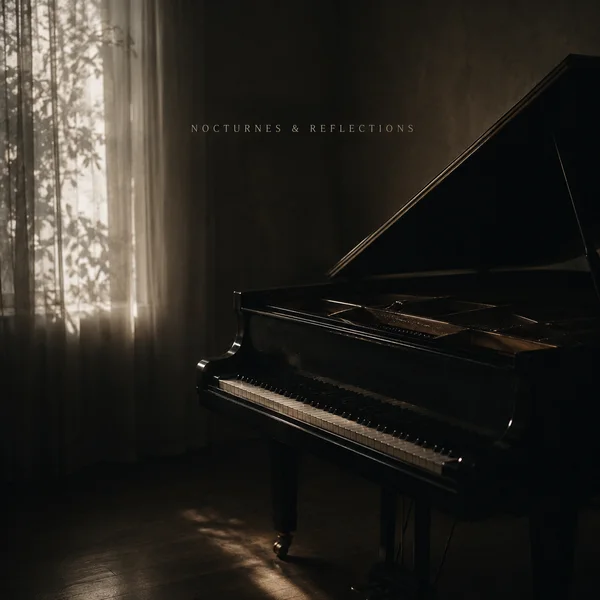

← All projects全部项目
Original music · NetEase Cloud Music原创音乐 · 网易云音乐
Original music · NetEase Cloud Music原创音乐 · 网易云音乐
Three releases as Luca以 Luca 之名发的三首歌
Sophia, I'm fine, it's ok, and soft pedal, released on NetEase Cloud Music in spring 2026.《Sophia》《I'm fine, it's ok》《soft pedal》，2026 年春天发在网易云音乐。
- Artist艺人名
- Luca
- Releases发行
- 3
- Latest最新
- soft pedal · May 12, 2026soft pedal · 2026.05.12
- Platform平台
- NetEase Cloud Music网易云音乐

soft pedalsoft pedal
A solo piano piece on the single “随笔”. Composition, performance, production, mastering and art direction are all mine. Neo-classical and ambient, mastered for dynamics rather than loudness.
收在单曲《随笔》里的一首独奏钢琴。作曲、演奏、制作、母带和视觉方向都由我完成。新古典 / 氛围风格，母带优先保留动态，不追求响度。
SophiaSophia
Released April 26, 2026. Subtitled “night walk”.
2026 年 4 月 26 日发行，副标题“night walk”。
I'm fine, it's okI'm fine, it's ok
Released May 6, 2026.
2026 年 5 月 6 日发行。
Streaming links open NetEase Cloud Music.播放链接跳转网易云音乐。